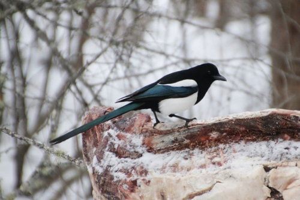

Black-billed Magpie
Pica hudsonia bird

Ubiquitous corvid; omnivore whose bulky thorny nests shelter other species after use.
1 documented plant relationship.
Pica hudsonia bird

Ubiquitous corvid; omnivore whose bulky thorny nests shelter other species after use.
1 documented plant relationship.
 Andrew Bazdyrev, some rights reserved (CC BY), uploaded by Andrew Bazdyrev")